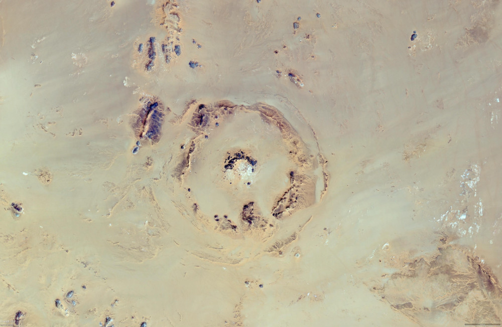
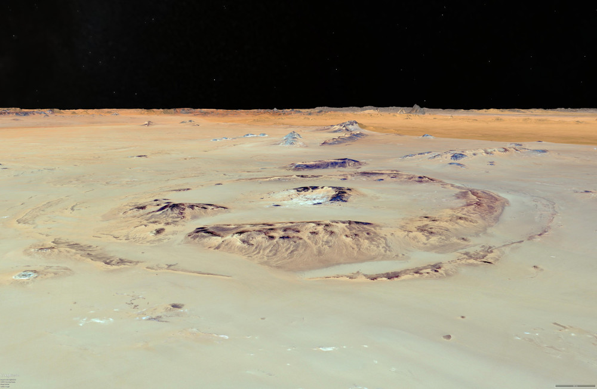

| Crater Name(s) | BP Impact Crater |
| Country | Libya |
| Longitude | 24 deg 20 min E |
| Latitude | 25 deg 19 min N |
| Diameter (km) | 2 km |
| Age | <120 Ma |
| Impact Origin Evidence | |
| Description | Discovered by BP oil geologists, this structure comprises a small central area of upturned strata and a prominent ring of hills up to 50 m high at a distance of 1 km from the centre of the structure. Studies indicated that the structure is about 2 km in diameter. |
| Landsat Scene | Path 194 Row 56 |
| References | Reimold W U and Koeberl C. 2014. Impact Structures in Africa: A Review. Journal of African Earth Sciences 93 (2014), 57-175. |
| Date Data Entered | 2014 09 24 |
Landsat 8 image of the BP impact structure (pansharpened RGB Bands 4, 3 and 2 - Path 180 Row 42). Coordinates WGS84 UTM zone 35 north.
Vertical Google Earth image of the BP impact structure.
Oblique Google Earth image to the north east across the BP impact structure.